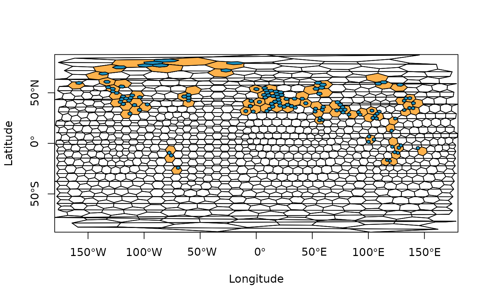

A function to assign fossil occurrences (or localities) to spatial bins/samples using a hexagonal equal-area grid.
Usage
bin_space(
occdf,
lng = "lng",
lat = "lat",
spacing = 100,
sub_grid = NULL,
return = FALSE,
plot = FALSE
)Arguments
- occdf
dataframe. A dataframe of the fossil occurrences (or localities) you wish to bin. This dataframe should contain the decimal degree coordinates of your occurrences, and they should be of classnumeric.- lng
character. The name of the column you wish to be treated as the input longitude (e.g. "lng" or "p_lng").- lat
character. The name of the column you wish to be treated as the input latitude (e.g. "lat" or "p_lat").- spacing
numeric. The desired spacing between the center of adjacent cells. This value should be provided in kilometres.- sub_grid
numeric. For an optional sub-grid, the desired spacing between the center of adjacent cells in the sub-grid. This value should be provided in kilometres. See details for information on sub-grid usage.- return
logical. Should the equal-area grid information and polygons be returned?- plot
logical. Should the occupied cells of the equal-area grid be plotted?
Value
If the return argument is set to FALSE, a dataframe is
returned of the original input occdf with cell information. If return is
set to TRUE, a list is returned with both the input occdf and grid
information and polygons.
Details
This function assigns fossil occurrence data into
equal-area grid cells using discrete hexagonal grids via the
h3jsr package. This package relies on
Uber's H3 library, a geospatial indexing system
that partitions the world into hexagonal cells. In H3, 16 different
resolutions are available
(see here). In the
implementation of the bin_space() function, the resolution is defined by
the user-input spacing which represents the distance between the centroid
of adjacent cells. Using this distance, the function identifies which
resolution is most similar to the input spacing, and uses this resolution.
Additional functionality allows the user to simultaneously assign occurrence
data to equal-area grid cells of a finer-scale grid (i.e. a ‘sub-grid’)
within the primary grid via the sub_grid argument. This might be desirable
for users to evaluate the differences in the amount of area occupied by
occurrences within their primary grid cells. This functionality also allows
the user to easily rarefy across sub-grid cells within primary cells to
further standardise spatial sampling (see example for basic implementation).
Note: prior to implementation, coordinate reference system (CRS) for input data is defined as EPSG:4326 (World Geodetic System 1984). The user should transform their data accordingly if this is not appropriate. If you are unfamiliar with working with geographic data, we highly recommend checking out Geocomputation with R.
Examples
# Get internal data
data("reefs")
# Reduce data for plotting
occdf <- reefs[1:250, ]
# Bin data using a hexagonal equal-area grid
ex1 <- bin_space(occdf = occdf, spacing = 500, plot = TRUE)
#> Average spacing between adjacent cells in the primary grid was set to 725.17 km.
#> H3 resolution: 1
# Bin data using a hexagonal equal-area grid and sub-grid
ex2 <- bin_space(occdf = occdf, spacing = 1000, sub_grid = 250, plot = TRUE)
#> Average spacing between adjacent cells in the primary grid was set to 725.17 km.
#> H3 resolution: 1

# EXAMPLE: rarefy
# Load data
occdf <- tetrapods[1:250, ]
# Assign to spatial bin
occdf <- bin_space(occdf = occdf, spacing = 1000, sub_grid = 250)
#> Average spacing between adjacent cells in the primary grid was set to 725.17 km.
#> H3 resolution: 1
# Get unique bins
bins <- unique(occdf$cell_ID)
# n reps
n <- 10
# Rarefy data across sub-grid grid cells
# Returns a list with each element a bin with respective mean genus richness
df <- lapply(bins, function(x) {
# subset occdf for respective grid cell
tmp <- occdf[which(occdf$cell_ID == x), ]
# Which sub-grid cells are there within this bin?
sub_bin <- unique(tmp$cell_ID_sub)
# Sample 1 sub-grid cell n times
s <- sample(sub_bin, size = n, replace = TRUE)
# Count the number of unique genera within each sub_grid cell for each rep
counts <- sapply(s, function(i) {
# Number of unique genera within each sample
length(unique(tmp[which(tmp$cell_ID_sub == i), ]$genus))
})
# Mean richness across subsamples
mean(counts)
})